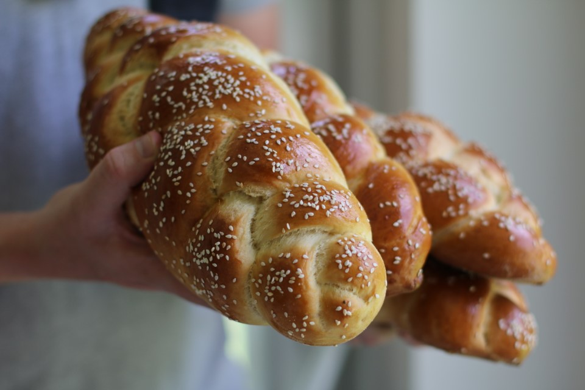

Chalot

Description
Chala is a classic shabbat bread, every friday I make chalot for shabbat.
This is my regular chalot recipe, Enjoy :-)
Ingredients
- 1/2 Kg whole grain flour
- 1 spoon of shmarim
- 1 cup of warm water
- 1/2 cup of sugar
- 1 large egg
- 1/3 cup oil
- 1 tablespoon of salt
Steps
- Mix all the ingredients together
- Let the dough rest for 1 hour
- Make your favorite chala shape
- Let it rest for 1/2 hour
- Warm up the oven at 180 Celzius
- Bake the challa for 1/2 hour
- Beteavon!